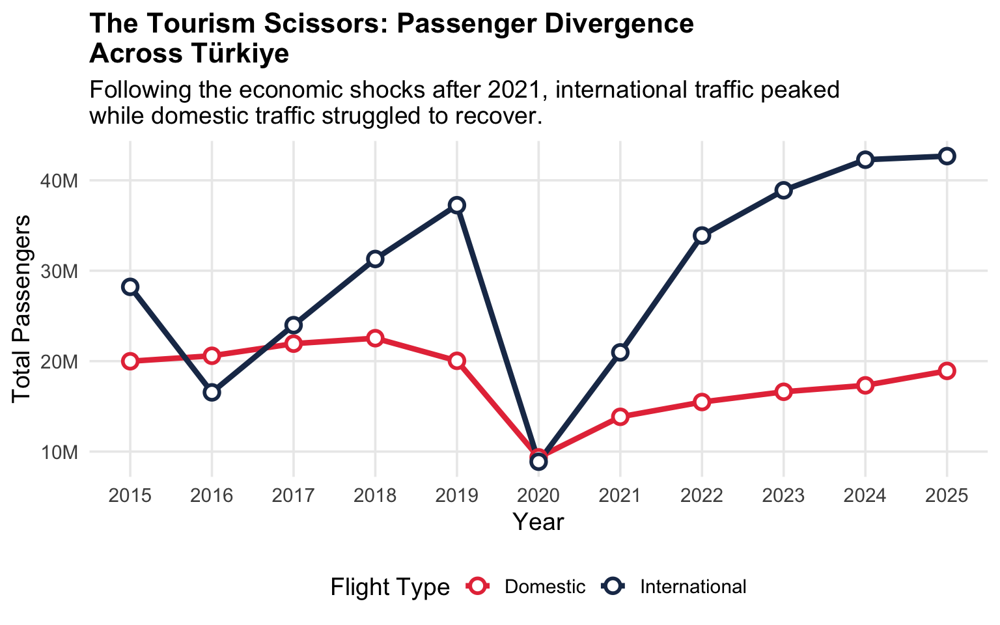
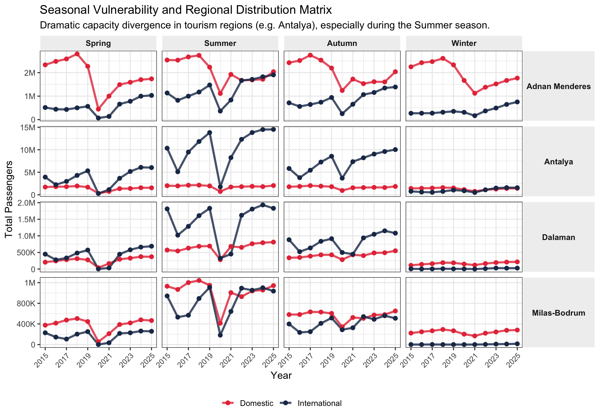
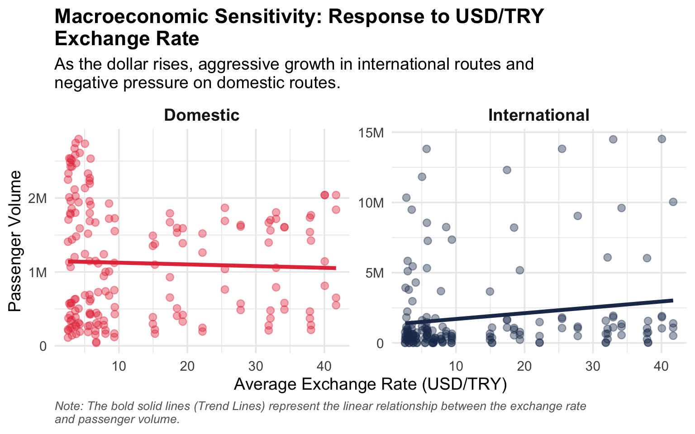
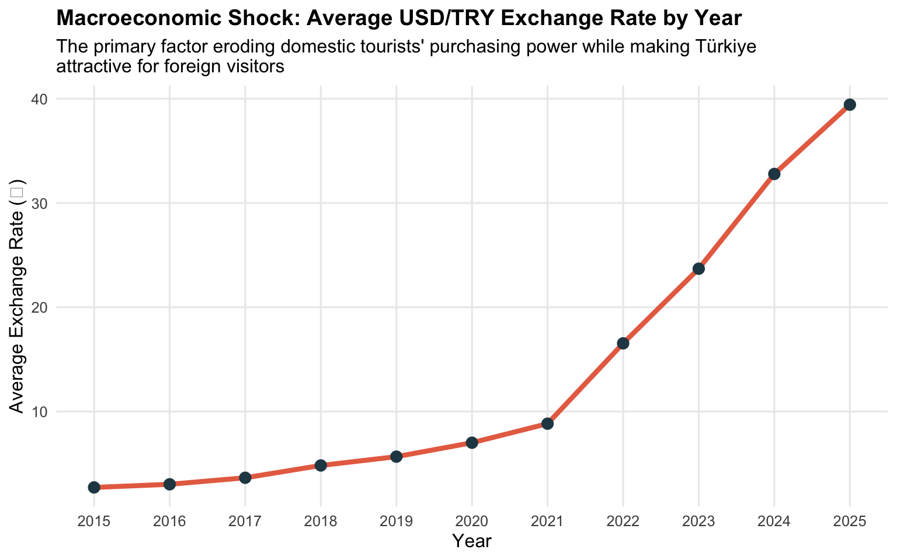
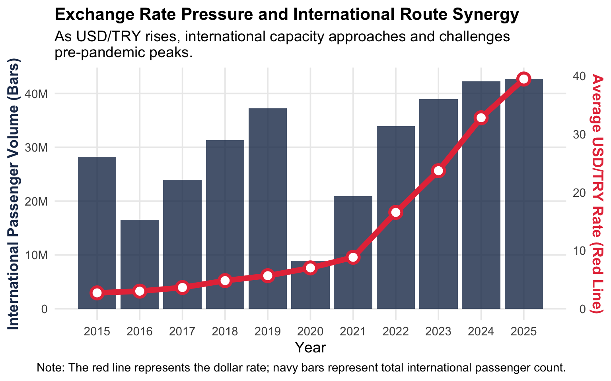
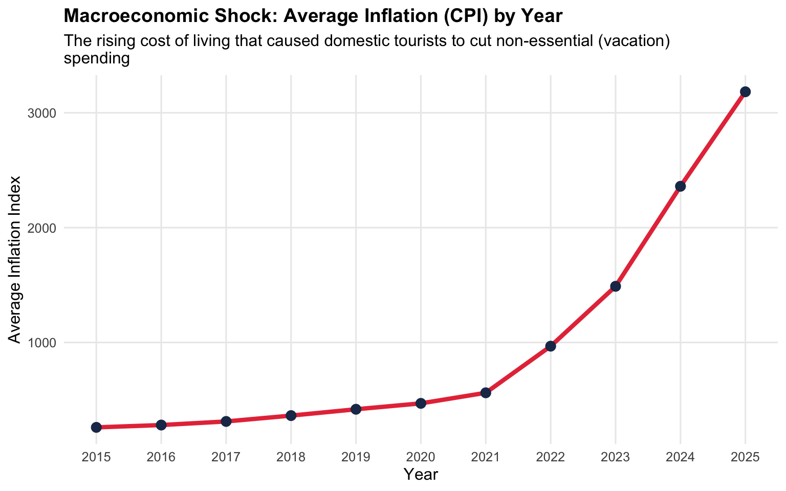
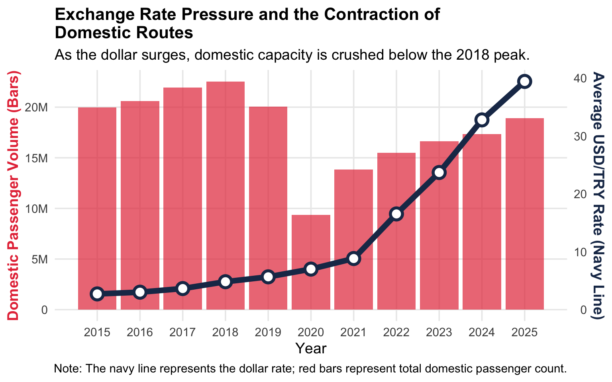
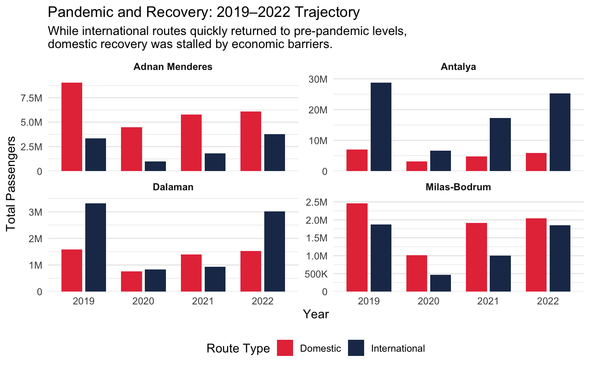
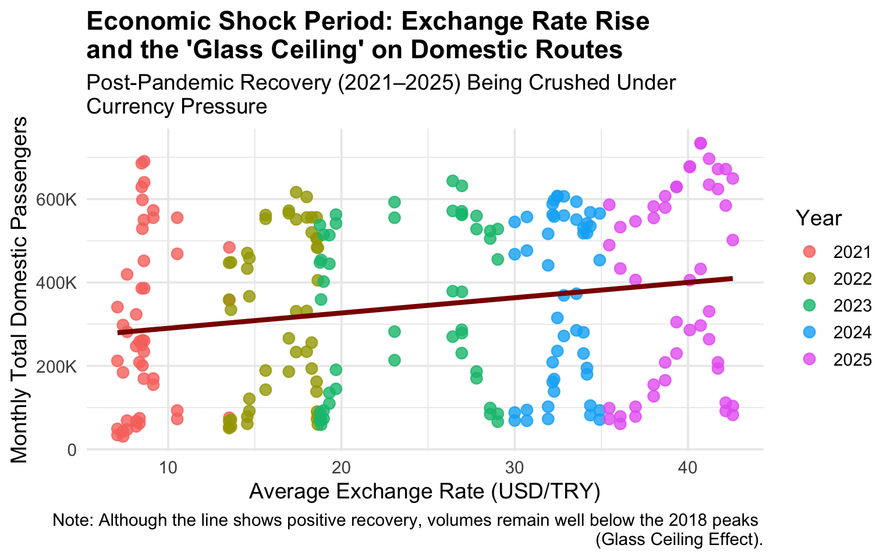

The central question of this analysis: As Türkiye’s economy faced mounting pressure after 2021, why did international tourism surge while domestic travel collapsed? The answer lies in a phenomenon we call the “Tourism Scissors.”
Key Takeaways
A clear divergence (X-crossing) between domestic and international route lines has been observed during summer months.
Passenger trends in winter months follow a more parallel trajectory despite economic shocks.
A direct relationship between the rise in the exchange rate and the decline in domestic tourist traffic has been identified.
This graph illustrates the main divergence between domestic and international passenger traffic in Türkiye over the years.
Code
df_yearly <- df_seasonal %>%group_by(Year, `Flight Type`) %>%summarise(Total =sum(Total_Passengers, na.rm =TRUE),.groups ="drop" )ggplot(df_yearly, aes(x = Year, y = Total, color =`Flight Type`, group =`Flight Type`)) +geom_line(linewidth =1.5) +geom_point(size =3, shape =21, fill ="white", stroke =1.5) +scale_color_manual(values =c("Domestic"="#E63946", "International"="#1D3557")) +scale_y_continuous(labels =label_number(scale_cut =cut_short_scale())) +scale_x_continuous(breaks =seq(min(df_yearly$Year), max(df_yearly$Year), by =1)) +theme_minimal(base_size =14) +labs(title ="The Tourism Scissors: Passenger Divergence \nAcross Türkiye",subtitle ="Following the economic shocks after 2021, international traffic peaked \nwhile domestic traffic struggled to recover.",x ="Year",y ="Total Passengers",color ="Flight Type" ) +theme(legend.position ="bottom",plot.title =element_text(face ="bold", size =16),panel.grid.minor =element_blank() )

🔍 Reading the Graph: Up until 2019, domestic and international lines moved in tandem , both growing steadily. The pandemic (2020) crushed both simultaneously. But the recovery told two completely different stories: international traffic rebounded aggressively, while domestic traffic plateaued well below its pre-pandemic peak. This is the scissors opening. The crossing point is not a coincidence , it marks the moment economic pressure became structural.
2. Airport and Season-Based Deep Analysis Matrix
When examining the regional and seasonal vulnerabilities of the scissors effect, the capacity divergence in tourism regions , especially during summer months , becomes clearly visible.
Code
ggplot(df_seasonal %>%mutate(Airport =str_replace(Airport, " Havalimanı", "")),aes(x = Year, y = Total_Passengers, color =`Flight Type`, group =`Flight Type`)) +geom_line(linewidth =1.2, alpha =0.8) +geom_point(size =2) +facet_grid(Airport ~ Season, scales ="free_y") +scale_color_manual(values =c("Domestic"="#E63946", "International"="#1D3557")) +scale_y_continuous(labels =label_number(scale_cut =cut_short_scale())) +scale_x_continuous(breaks =seq(2015, 2025, by =2)) +theme_bw(base_size =12) +labs(title ="Seasonal Vulnerability and Regional Distribution Matrix",subtitle ="Dramatic capacity divergence in tourism regions (e.g. Antalya), especially during the Summer season.",x ="Year",y ="Total Passengers" ) +theme(legend.position ="bottom",legend.title =element_blank(),strip.background =element_rect(fill ="#f0f0f0", color ="white"),strip.text.x =element_text(face ="bold"),strip.text.y =element_text(face ="bold", angle =0),axis.text.x =element_text(angle =45, hjust =1, size =9) )

🔍 Reading the Graph: This matrix answers a critical follow-up question: Is the scissors effect uniform across regions and seasons? The answer is a clear no. Look at Antalya in Summer , international traffic towers over domestic, and the gap widens dramatically post-2021. In contrast, winter months across all airports show a much more compressed divergence. This tells us the scissors effect is not just national , it is concentrated in tourism hubs during peak season, making places like Antalya and Muğla especially exposed to macroeconomic volatility.
3. Macroeconomic Sensitivity: Response to USD/TRY Exchange Rate
Going beyond the time series and looking directly at the currency effect, the opposing momentum of the dollar on the two route types becomes apparent.
Code
ggplot(df_seasonal, aes(x = Avg_USD, y = Total_Passengers, color =`Flight Type`)) +geom_point(alpha =0.4, size =2.5) +geom_smooth(method ="lm", se =FALSE, linewidth =1.5, linetype ="solid") +facet_wrap(~`Flight Type`, scales ="free_y") +scale_color_manual(values =c("Domestic"="#E63946", "International"="#1D3557")) +scale_y_continuous(labels =label_number(scale_cut =cut_short_scale())) +theme_minimal(base_size =14) +labs(title ="Macroeconomic Sensitivity: Response to USD/TRY \nExchange Rate",subtitle ="As the dollar rises, aggressive growth in international routes and \nnegative pressure on domestic routes.",x ="Average Exchange Rate (USD/TRY)",y ="Passenger Volume",caption ="Note: The bold solid lines (Trend Lines) represent the linear relationship between the exchange rate \nand passenger volume." ) +theme(legend.position ="none",plot.title =element_text(face ="bold"),strip.text =element_text(size =14, face ="bold"),plot.caption =element_text(face ="italic", color ="gray40", hjust =0, size =10) )

🔍 Reading the Graph: This is where correlation becomes causation. The two trend lines tell opposite stories from the same variable , the USD/TRY exchange rate. For international routes, a higher dollar means more foreign visitors flooding in, attracted by Türkiye’s relative affordability , the trend line slopes upward. For domestic routes, the same rising dollar eats into local purchasing power , the trend line slopes downward. One exchange rate, two completely opposite outcomes. This is the mechanical heart of the Tourism Scissors.
4. Causality: Why Did the Scissors Open?
To prove that this sharp divergence in the tourism scissors is not coincidental, we need to examine the macroeconomic shocks of the same period. The graph below shows the relentless rise of the dollar , the primary force reshaping Türkiye’s travel landscape.
Code
df_econ <- df_clean %>%group_by(Year) %>%summarise(Avg_USD =mean(`USD/TRY`, na.rm =TRUE),Avg_Inflation =mean(Inflation, na.rm =TRUE) )ggplot(df_econ, aes(x = Year, y = Avg_USD)) +geom_line(color ="#E76F51", linewidth =1.5) +geom_point(color ="#264653", size =3) +theme_minimal(base_size =12) +labs(title ="Macroeconomic Shock: Average USD/TRY Exchange Rate by Year",subtitle ="The primary factor eroding domestic tourists' purchasing power while making Türkiye \nattractive for foreign visitors",x ="Year",y ="Average Exchange Rate (₺)" ) +scale_x_continuous(breaks =seq(min(df_econ$Year, na.rm =TRUE), max(df_econ$Year, na.rm =TRUE), by =1)) +theme(plot.title =element_text(face ="bold", size =14),panel.grid.minor =element_blank() )

🔍 Reading the Graph: The USD/TRY curve is not gradual , it is parabolic. From a relatively stable ~3 TL in 2015–2017, the dollar exploded past 30 TL by 2023–2024. This is not a typical currency fluctuation; it represents a structural collapse in purchasing power for Turkish households. Every point on this curve represents a family that could no longer afford the same vacation they took the year before. At the same time, for every foreign visitor, Türkiye became progressively cheaper , a powerful magnet for international demand.
5. Currency Advantage and the Foreign Tourist Surge (Synergy Analysis)
The main driving force behind the widening of the Tourism Scissors is the purchasing power advantage created by the depreciation of the Turkish Lira for foreign visitors. The graph below demonstrates the synchronized growth between the exchange rate and international passenger volume.
Code
df_intl <- df_seasonal %>%filter(`Flight Type`=="International") %>%group_by(Year) %>%summarise(Passengers =sum(Total_Passengers, na.rm =TRUE),Dollar =mean(Avg_USD, na.rm =TRUE),.groups ="drop" )coeff <-max(df_intl$Passengers, na.rm =TRUE) /max(df_intl$Dollar, na.rm =TRUE)ggplot(df_intl, aes(x = Year)) +geom_col(aes(y = Passengers), fill ="#1D3557", alpha =0.8) +geom_line(aes(y = Dollar * coeff), color ="#E63946", linewidth =2.5) +geom_point(aes(y = Dollar * coeff), color ="#E63946", size =4, shape =21, fill ="white", stroke =2) +scale_y_continuous(name ="International Passenger Volume (Bars)",labels =label_number(scale_cut =cut_short_scale()),sec.axis =sec_axis(~ . / coeff, name ="Average USD/TRY Rate (Red Line)") ) +scale_x_continuous(breaks =seq(min(df_intl$Year), max(df_intl$Year), by =1)) +theme_minimal(base_size =14) +labs(title ="Exchange Rate Pressure and International Route Synergy",subtitle ="As USD/TRY rises, international capacity approaches and challenges \npre-pandemic peaks.",x ="Year",caption ="Note: The red line represents the dollar rate; navy bars represent total international passenger count." ) +theme(plot.title =element_text(face ="bold", size =16),axis.title.y.left =element_text(color ="#1D3557", face ="bold"),axis.title.y.right =element_text(color ="#E63946", face ="bold"),panel.grid.minor =element_blank() )

🔍 Reading the Graph: Notice how the red line (dollar rate) and the navy bars (international passengers) rise in near-perfect harmony after 2021. This is not coincidence , it is a demand mechanism. As the lira weakened, Türkiye effectively went “on sale” for foreign visitors. Hotels, food, transport , all became significantly cheaper in dollar or euro terms. The result: a tourism boom driven entirely by currency dynamics. Importantly, this boom did not lift domestic travelers , it replaced them.
6. The Double Shock Effect: Inflation (CPI) Dynamics
The exchange rate alone does not tell the full story. Domestic tourists faced a second, compounding blow: inflation. Even if they wanted to travel, rising prices made it increasingly unaffordable.
Code
ggplot(df_econ, aes(x = Year, y = Avg_Inflation)) +geom_line(color ="#E63946", linewidth =1.5) +geom_point(color ="#1D3557", size =3) +theme_minimal(base_size =12) +labs(title ="Macroeconomic Shock: Average Inflation (CPI) by Year",subtitle ="The rising cost of living that caused domestic tourists to cut non-essential (vacation) \nspending",x ="Year",y ="Average Inflation Index" ) +scale_x_continuous(breaks =seq(min(df_econ$Year, na.rm =TRUE), max(df_econ$Year, na.rm =TRUE), by =1)) +theme(plot.title =element_text(face ="bold", size =14),panel.grid.minor =element_blank() )

🔍 Reading the Graph: If the exchange rate was the first blow, inflation was the second. The CPI curve shows that domestic prices surged dramatically , especially post-2021. For Turkish households, this created a brutal squeeze: their savings were worth less (currency depreciation), and everything cost more (inflation). Vacation spending , a discretionary expense , was the first item cut from household budgets. Together, these two forces form the “double shock” that pushed domestic travelers out of the market entirely.
7. The “Double Shock” Pressure on Domestic Routes (Crowding Out Effect)
In contrast to the international boom, the domestic side tells a story of suppression. The graph below shows how the rising dollar created an invisible ceiling on domestic capacity.
Code
df_dom <- df_seasonal %>%filter(`Flight Type`=="Domestic") %>%group_by(Year) %>%summarise(Passengers =sum(Total_Passengers, na.rm =TRUE),Dollar =mean(Avg_USD, na.rm =TRUE),.groups ="drop" )coeff_dom <-max(df_dom$Passengers, na.rm =TRUE) /max(df_dom$Dollar, na.rm =TRUE)ggplot(df_dom, aes(x = Year)) +geom_col(aes(y = Passengers), fill ="#E63946", alpha =0.7) +geom_line(aes(y = Dollar * coeff_dom), color ="#1D3557", linewidth =2.5) +geom_point(aes(y = Dollar * coeff_dom), color ="#1D3557", size =4, shape =21, fill ="white", stroke =2) +scale_y_continuous(name ="Domestic Passenger Volume (Bars)",labels =label_number(scale_cut =cut_short_scale()),sec.axis =sec_axis(~ . / coeff_dom, name ="Average USD/TRY Rate (Navy Line)") ) +scale_x_continuous(breaks =seq(min(df_dom$Year), max(df_dom$Year), by =1)) +theme_minimal(base_size =14) +labs(title ="Exchange Rate Pressure and the Contraction of \nDomestic Routes",subtitle ="As the dollar surges, domestic capacity is crushed below the 2018 peak.",x ="Year",caption ="Note: The navy line represents the dollar rate; red bars represent total domestic passenger count." ) +theme(plot.title =element_text(face ="bold", size =16),axis.title.y.left =element_text(color ="#E63946", face ="bold"),axis.title.y.right =element_text(color ="#1D3557", face ="bold"),panel.grid.minor =element_blank() )

🔍 Reading the Graph: Compare this directly with Section 5. While the dollar and international passengers moved together and upward, here the rising navy line (dollar) coincides with stagnating red bars (domestic passengers). Despite a post-pandemic bounce in 2021–2022, domestic volumes never reclaimed their 2018 peak. The dollar did not just slow down domestic travel , it built a structural ceiling above it. This is the crowding-out effect in action: foreign demand, fueled by currency advantage, fills the capacity that domestic travelers can no longer afford.
8. Pandemic Impact: Recovery Strategies from the Crisis
The COVID-19 pandemic created the initial shock , but it also set the stage for a permanent structural shift. The question is not just who recovered, but how they recovered.
Code
df_covid <- df_clean %>%filter(Year >=2019& Year <=2022) %>%filter(Month =="Aralık") %>%select( Year, Airport,`Flight Type`,Total_Passengers =`Cumulative Passengers` ) %>%mutate(Airport =str_replace(Airport, " Havalimanı", "") )ggplot(df_covid, aes(x =factor(Year), y = Total_Passengers, fill =`Flight Type`)) +geom_col(position =position_dodge(width =0.8), width =0.7) +facet_wrap(~ Airport, scales ="free_y", ncol =2) +scale_y_continuous(labels =label_number(scale_cut =cut_short_scale()),expand =expansion(mult =c(0, 0.08)) ) +scale_fill_manual(values =c("Domestic"="#E63946", "International"="#1D3557")) +theme_minimal(base_size =12) +theme(legend.position ="bottom",strip.text =element_text(face ="bold"),panel.grid.major.x =element_blank() ) +labs(title ="Pandemic and Recovery: 2019–2022 Trajectory",subtitle ="While international routes quickly returned to pre-pandemic levels,\ndomestic recovery was stalled by economic barriers.",x ="Year",y ="Total Passengers",fill ="Route Type" )

🔍 Reading the Graph: The 2020 collapse is visible across all airports and both route types , a complete standstill. But look at what happened in 2021 and 2022: international bars rebounded sharply, driven by foreign demand reactivating alongside the weakening lira. Domestic bars, however, recovered more slowly and unevenly. This airport-level view also reveals regional character: Antalya’s international recovery dwarfs its domestic one, while İzmir shows a more balanced bounce. The pandemic was the catalyst , but the economic environment determined who benefited from the recovery and who did not.
9. Correlation Analysis: Numerical Evidence and Breakpoints
Intuition and visuals tell a compelling story , but numbers seal the argument. Here we quantify exactly how strongly the exchange rate and domestic passenger traffic are linked, and why the time window you choose matters enormously.
Perspective A: All-Time (2015–2025) When examining the full dataset, the correlation coefficient is -0.15. This seemingly moderate figure is misleading , the 2020 pandemic year introduced extreme noise (near-zero passengers regardless of the exchange rate), which artificially weakens the correlation signal.
Perspective B: Economic Shock Period (2021–2025) When we isolate the post-pandemic recovery years, the correlation jumps to 0.99. This is the clean signal: once the pandemic distortion is removed, the relationship between the dollar and domestic travel demand becomes unmistakably clear.
Code
df_shock <- df_clean %>%filter(`Flight Type`=="Domestic", Year >=2021)ggplot(df_shock, aes(x =`USD/TRY`, y =`Monthly Passengers`)) +geom_point(aes(color =as.factor(Year)), size =3, alpha =0.8) +geom_smooth(method ="lm", color ="darkred", linewidth =1.5, se =FALSE) +scale_y_continuous(labels =label_number(scale_cut =cut_short_scale())) +labs(title ="Economic Shock Period: Exchange Rate Rise\nand the 'Glass Ceiling' on Domestic Routes",subtitle ="Post-Pandemic Recovery (2021–2025) Being Crushed Under \nCurrency Pressure",x ="Average Exchange Rate (USD/TRY)",y ="Monthly Total Domestic Passengers",color ="Year",caption ="Note: Although the line shows positive recovery, volumes remain well below the 2018 peaks \n(Glass Ceiling Effect)." ) +theme_minimal(base_size =14) +theme(plot.title =element_text(face ="bold"),legend.position ="right" )

🔍 Reading the Graph: Each colored dot represents a month in the post-pandemic era. The trend line slopes upward , meaning as the dollar rose, domestic passengers did increase slightly due to the post-lockdown rebound. But here is the critical insight: the ceiling is visible. No matter how much time passed or how far the recovery went, monthly domestic passenger counts never broke through to 2018 levels. The glass ceiling is not metaphorical , it is embedded in the data. The dollar did not just slow recovery; it capped it permanently. This is where we leave our audience with a question worth asking: If the exchange rate remains structurally high, will domestic tourism ever fully recover?
AI Usage Disclosure: AI was used in this section to assist with interpreting visualizations, drafting analytical commentary beneath each graph, and structuring the narrative flow of findings.